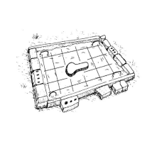

Toilet Choice
Toilet Choice
What people want from toilets
- Privacy: A toilet can be as simple as a deep hole in the ground. But the need for privacy makes it important for a toilet to have a good shelter. Making a door or enclosed entrance to a toilet, or building it away from where people usually walk, will make it nicer to use. The best shelters are simple and are built from local materials.
- Safety: If a toilet is badly built it can be dangerous to use. And if it is far from the home, women may be in danger of sexual violence when they take care of their sanitation needs. For a toilet to be safe it must be well-built and in a safe place.
- Comfort: People will more likely use a toilet with a comfortable place to sit or squat, and a shelter large enough to stand up and move around in. They will also be more likely to use a toilet that is close to the house and that gives protection from wind, rain, or snow.
- Cleanliness: If a toilet is dirty and smelly, no one will want to use it - and it may spread disease. Sharing the task of cleaning or paying for cleaning with money or other benefits will help to ensure that toilets are kept clean.
- Respect: A well-kept toilet brings status and respect to its owner. Often this is a very important reason for people to spend the money and effort to build one. Safe water for washing and drinking is also important for health. So are other kinds of cleanliness such as ensuring that women have a way to keep clean during monthly bleeding.
| What people want from toilets |
| (c) The Hesparian Sanitation
|
Toilet choices
| Simple compost toilet for tree planting
|
| Simple compost toilet for tree planting |
| (c) The Hesparian Sanitation
|
| Urine-diverting dry toilet An above-ground structure with two chambers, a toilet bowl that separates urine and feces, and a pipe that diverts urine. Best in places where people will use treated human waste as fertilizer, and where the ground water is high or there is risk of flooding. |
| Urine-diverting dry toilet |
| (c) The Hesparian Sanitation
|
| 2 pit compost toilet 2 shallow pits, a platform, and a light, movable shelter or a permanent shelter big enough for both pits. Best in places where people will use treated human waste as fertilizer. |
 |
| 2 pit compost toilet |
| (c) The Hesparian Sanitation
|
| Pour-flush toilet A water-seal trap, a platform, 1 or 2 deep pits, and a shelter. Best in places with deep groundwater and where people use water for anal washing after using the toilet. |
| Pour-flush toilet |
| (c) The Hesparian Sanitation
|
| Ventilated improved pit toilet A deep pit, a concrete or wood and earth platform, a shelter, and a vent pipe to trap flies. Best in places with deep groundwater and no risk of flooding. |
| Ventilated improved pit toilet |
| (c) The Hesparian Sanitation
|
| Closed pit toilet A deep pit, a platform, and a shelter. Best in places with deep groundwater and no risk of flooding. |
| Closed pit toilet |
| (c) The Hesparian Sanitation
|
Where to build a toilet
| A toilet should be at least 20 meters from rivers, lakes, springs, streams and wells. |
| (c) The Hesparian Sanitation
|
| Wells should be uphill from pit toilets because groundwater flows downhill. |
| (c) The Hesparian Sanitation
|
How to make a concrete toilet platform
| 1. Lay down a plastic sheet or used cement bags on flat ground. On top of this, make a mold of bricks or boards about 120 centimeters long, 90 centimeters wide and 6 centimeters deep. | |
| Mold of bricks | |
| (c) The Hesparian Sanitation |
 | 2. Place a wooden "keyhole" mold in the center, to shape the toilet hole. You can also use bricks to block out the hole, and shape the hole after the concrete is poured. |
| Key hole mould | |
| (c) The Hesparian Sanitation |
| 3.Make a concrete mix of 1 part cement, 2 parts gravel, 3 parts sand, and water. Pour the concrete into the mold until it is half-way to the top. | |
| Concrete mix | |
| (c) The Hesparian Sanitation |
|  | 4.Place reinforcing wires 3 millimeters thick on top of the wet concrete. Use 4 to 6 wires going in each direction. Make handles of wire 8 to 10 millimeters thick, and set them in the concrete near the corners. |
| Reinforcing wires | |
| (c) The Hesparian Sanitation |
| 5.Pour the rest of the concrete, and level it with a block of wood. | |
| Pour concrete and level it | |
| (c) The Hesparian Sanitation |
6. Remove the keyhole mold when the concrete begins to harden (after about 3 hours). If you used a brick mold, remove the bricks and form the hole into a keyhole shape. Leave the slab overnight and cover it with wet cement sacks, damp cloth or a plastic sheet. Wet it several times a day to keep it damp for 7 days. Keeping it wet lets the concrete dry slowly so that it hardens well and becomes strong.
7. When the concrete is completely hardened, place the platform over the pit. To make the pit more secure, also use a concrete ring beam.
8. Make a cover for the hole out of concrete or wood. It can have a handle, or can be made to be moved by a person's foot, to avoid getting germs on the hands.
| Platform improvemet |
| (c) The Hesparian Sanitation
|
Closed pit toilets
The ventilated improved pit toilet uses a vent pipe to reduce smells and flies.
| Closed pit toilet |
| (c) The Hesparian Sanitation
|
To make a closed pit toilet
| Lining top of the pit with stone |
| (c) The Hesparian Sanitation
|
| Making a platform and a shelter to put over the pit |
| (c) The Hesparian Sanitation
|
| Lining pit with grass |
| (c) The Hesparian Sanitation
|
How to make a concrete ring beam
| Concrete ring beam |
| (c) The Hesparian Sanitation
|
| 2. Make a mold of bricks, wooden boards, or both. For a platform that is 120 centimeters by 90 centimeters, the ring beam will be 130 centimeters by 1 meter on the outside, and 1 meter by 70 centimeters on the inside. | |
| Add concrete | |
| (c) The Hesparian Sanitation
|
| 3. Make a concrete mix of 1 part cement, 2 parts gravel, 3 parts sand, and water. Pour the concrete into the mold until it is half-way to the top. | |
| Make concrete mix | |
| (c) The Hesparian Sanitation
|
| 4. Place 2 pieces of reinforcing wire 3 millimeters thick on top of the wet concrete on each side of the ring beam. If you want, you can make handles of wire 8 to 10 millimeters thick, and set them in the concrete near the corners. | |
| Reinforced wire | |
| (c) The Hesparian Sanitation
|
|
| 5. Pour the rest of the concrete, and level it with a block of wood. |
| Pour the rest of the concrete | |
| (c) The Hesparian Sanitation
|

{kind=link}
6. Cover the concrete with wet cement sacks, wet cloth, or a plastic sheet and leave it overnight. Wet it several times a day to keep it damp for 7 days.
7.When the ring beam is solid, carry it to the site of the toilet. Level the ground, place the ring beam, and dig a pit inside of it. Pack soil around the outside of the ring beam to set it in place.
8. Place the toilet platform on top, then build a shelter.
Ventilated improved pit toilets (VIP)
How the VIP works
To make the VIP toilet
To use and maintain a VIP toilet
VIP toilets can have these problems
| Covering hole of VIP toilet |
| (c) The Hesparian Sanitation
|
| Structure around VIP toilet |
| (c) The Hesparian Sanitation
|
| Making roof and wall of VIP toilet |
| (c) The Hesparian Sanitation
|
Ecological toilets
Turning waste into fertilizer
| Ecological sanitation turns waste into a resource |
| (c) The Hesparian Sanitation
|
- The soil grows crops
- Crops become food
- Food becomes human waste
- Human waste can be turned into fertilizer
- Fertilizer feeds the soil
Germs and nutrients
Both urine and feces carry nutrients that can improve soil. But feces can also have many germs that cause disease. For this reason, making fertilizer from feces takes more care than composting animal manure and food scraps. Feces should never be used raw. But once they are made into fertilizer, it can safely help to grow food, trees, and other crops without chemical fertilizers. Urine carries far fewer germs than feces and has more nutrients. This makes it safer to handle and very valuable as fertilizer. But because it does carry some germs and is too strong to use directly on plants, it also needs special handling.
Compost toilets and urine-diverting dry toilets
| In compost toilets:
|
| In dry toilets:
|
Ecological toilets use local materials and labor in Central Mexico
Simple compost toilet for tree planting
| Simple compost toilet for tree planting |
| (c) The Hesparian Sanitation |
To make a simple compost toilet for tree planting
| To use and maintain this toilet
|
| Moving toilet structure |
| (c) The Hesparian Sanitation
|
2 pit compost toilet
To build a 2 pit compost toilet
To maintain a 2 pit compost toilet
- Keep a bucket of soil mixed with dry plant matter in the shelter. After each use, throw 2 handfuls in the pit.
- When the pile gets too high, stir it down with a stick.
- Sweep and wash the platform often. Be careful not to get much water in the pit.
| After 1 year the contents of the pit compost toilet should be safe to mix into garden soil as fertilizer. Wear gloves and shoes when handling it. |
| (c) The Hesparian Sanitation
|
Urine-diverting dry toilets
- The groundwater is too high for pit toilets.
- Flooding is common.
- The ground is too hard to dig.
- People want a permanent toilet in or near their house.
2 chamber dry toilets
| Front of toilet - Parts of the 2 chamber dry toilet |
| (c) The Hesparian Sanitation
|
| Back of toilet - Parts of the 2 chamber dry toilet |
| (c) The Hesparian Sanitation
|
- Shelter for comfort, privacy, and to keep the toilet dry.
- Urine pot where the urine is collected from the toilet and the urinal.
- 2 chambers made of brick, concrete, or other waterproof material. While one is in use as a toilet, feces dry and decompose in the other.
- One kind of dry toilet uses a toilet bowl that separates urine from feces. The bowl looks very much like any toilet bowl, but it does not use water. Home-made urine catching devices can work just as well
- Small doors at the back where the dried feces can be removed.
- Hose to divert urine from urinal and bowl to urine pot.
- Urinal
| 3 ways to build a dry toilet |
| (c) The Hesparian Sanitation
|
| Finishing base and structure of toilet |
| (c) The Hesparian Sanitation
|
To use and maintain a 2 chamber dry toilet
| To use and maintain a 2 chamber dry toilet |
| (c) The Hesparian Sanitation
|
- The urine-separating device is nailed to the inside of the toilet hole. A screen placed inside the device will keep things from falling into the tube. When the screen is blocked, remove it, clean it, and replace it.
- Keep a pot of mixed soil, ash and dry plant matter in the shelter. After each use, throw 2 handfuls down the dry part of the toilet bowl. Then close the lid.
- Post instructions to help people use and maintain the toilet.
- Keep a pot of water in the shelter. Add a little water to the urinal and the urine separator of the toilet bowl after each use, to control the smell.
- Keep unused chamber covered when not in use.
- Make a urinal from a plastic jug and attach a tube to carry urine to a container or drainage pit.
Make sure no water gets in the toilet chamber.
- If the contents of the toilet get wet, add more dry matter.
- If the toilet smells bad, add more dry matter, and make sure the vent pipe is clear.
- If the pile builds up too high, use a stick to push it back down.
- When the urine pot is full, empty it and make fertilizer.
- When the first chamber is full, use the other chamber. Be sure to cover the first chamber.
- It is best to let the feces sit for a full year before emptying the chamber. After a year, or when the second chamber is full, empty the first chamber and repeat the process.
Do not put garbage in the toilet
For ecological toilets to work, they must only be used for excrement. Women having their monthly bleeding may safely use ecological toilets. But sanitary pads and other products should be put in trash bins - not in the toilet. Ecological toilets cannot be used to dispose of things that will not break down, such as cans, bottles, plastic, tampons, or large amounts of paper. They can take small amounts of paper, leaves, sawdust and other plant matter because these things break down and can be turned back into the soil
| Do not throw garbage in the toilet |
| (c) The Hesparian Sanitation
|
Since there still may be some germs, it is important to wear gloves and shoes when handling the contents, and to wash well after emptying the toilet.
| Remove dry material for use as fertilizer. |
| (c) The Hesparian Sanitation
|
| Always wash after handling human fertilizer. |
| (c) The Hesparian Sanitation
|
Urine fertilizer
To make simple urine fertilizer
To make fermented urine fertilizer
- 1. Collect urine from dry toilets. For each liter of urine, add 1 tablespoon of rich soil or compost.
- 2. Let the mix sit uncovered for 4 weeks. This will smell bad, so do it in a place away from people. The urine mixture will ferment and turn brown.
- 3. Fill a large container with dry leaves or other dry plant matter. A large container can be made by cutting one face off an old car tire and turning it inside out. Line the container with thick plastic to prevent water leakage through the hole in the bottom.
- 4. Add fermented urine. The best mix is 7 parts plant matter to 1 part urine (about 3 liters of urine for every 30 cubic centimeters of plant matter.)
- 5. Cover with a thin layer of soil - no more than 10 centimeters. Plant seeds or seedlings.
- 6. Water every 2 days with a mix of 1 part urine to 10 parts water. (This is a weaker mix than we suggest above, because it will be used in closed containers rather than open gardens or fields.) The dry plant matter will turn to rich soil in 10 to 12 months.
Improved and adapted dry toilets
Heat from the sun
More air flow
| Improved and adapted dry toilets |
| (c) The Hesparian Sanitation
|
| Wash toilet with reed bed |
| (c) The Hesparian Sanitation
|
Wash toilet with reed bed
Pour-flush pit toilets
| Water-seal trap set in concrete platform |
| (c) The Hesparian Sanitation
|
| 1) Pit pour-flush toilet |
| (c) The Hesparian Sanitation
|
| 2) Pit pour-flush toilet |
| (c) The Hesparian Sanitation
|
How to use a pour-flush toilet
What to know when building a 2 pit pour-flush toilet
| What to know when building a 2 pit pour-flush toilet |
| (c) The Hesparian Sanitation
|
- Pit shape: The pits can be any shape, but round pits are the least costly and most stable.
- Pit lining should be brick or stone, in cement or lime mortar, with spaces left for liquids to drain out.
- The distance between pits should be at least the same as the depth of the pits. If the pits are 1 meter deep, they should be at least 1 meter apart.
- Pits should be covered with reinforced concrete slabs, stone slabs, or wooden planks. The concrete platform described on page 30, without a hole in the middle, could make a good pit cover.
To use and maintain a pour-flush toilet
- The water seal gets blocked, the toilet will not work.
- The groundwater is less than 3 meters deep, there is a risk of groundwater contamination.
Emptying the pit
Information Source Links
- Sanitation and Cleanliness for a Healthy Environment - The Hesperian Foundation in collaboration with the United Nations Development Programme (2005). The Hesperian Foundation
Last updated.
| Unless otherwise stated, all content on the Infonet Biovision Website is licensed under a Creative Commons License | Disclaimer |